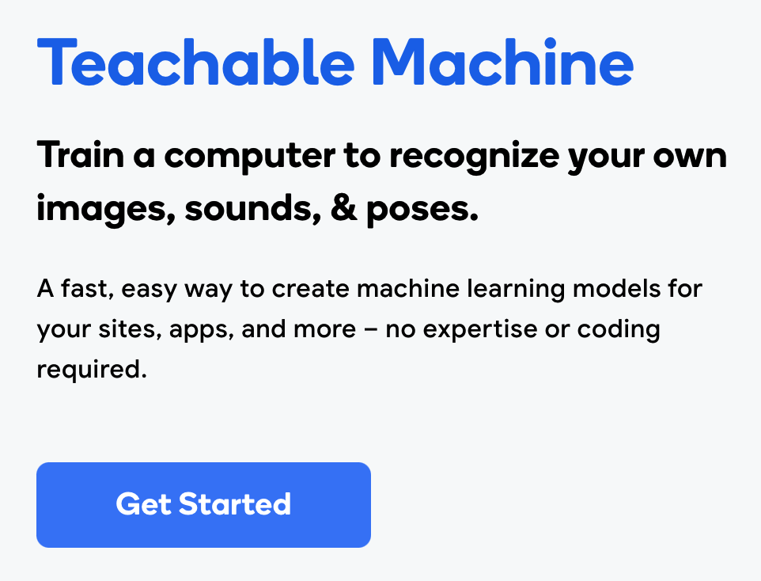
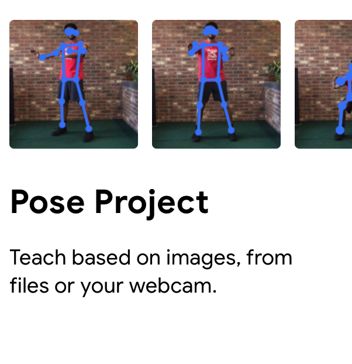

Create Your Own ML Model


Creating a pose model on Teachable Machine
Think about 2 different poses you want to create a model for — what are the names of these poses?
You will use these pose ideas to create a model using Google Teachable Machine.
First, you will create a pose project. Open Google Teachable Machine on a separate browser window/tab.
Then, click “Get Started” and then, click “Pose Project”.
This will open up a workspace for you to create a pose detection model.
Gather data for your pose model
After starting up a pose model, the next step is for you to gather data for your machine learning model to train on. Watch the quick clip below on how to do this.
Make sure you change the settings so that “Hold to Record” is off.
Capture one 10-second set of training examples for each of your classes. Use the names you thought of for each of your poses as your class names (like the “Wings Up” and “Wings Down” example you saw earlier).
Train your model on the data you created
After gathering your data, the next step is for you to train your model on the data you gathered. Watch the quick clip below on how to do this.
Click “Train Model” and wait — make sure you leave the window/tab open as you wait!
After your model is done training, you can test your model out directly on your pose project workspace.
Export the model you created
The last step is for you to export the model you trained. Watch the quick clip below on how to do this.
Click “Export Model”. In the popup, click on the “Upload” button and copy the shareable link into danceON (the same way you copied the model link in the previous exercise).
Update the code in danceON to reflect your poses
Feel free to update the code from the previous activity so that it corresponds to the names of the new poses you created for your model. For example, instead of drawing “wings”, you might want to draw circles or other shapes!
Trade and test machine learning models!
The best way to test out how well your model works is to have someone else use the model you created!
- How well does your peer’s model work for you?
- What are your observations about your peer’s model?
- In what cases is your peer’s model failing? Why do you think that’s the case?
- What would you suggest to improve the performance of the model?
Wrap-up
Quick round discussion 1. What are your thoughts about the activities in today’s session? 2. What would be your key takeaway about the intersection and machine learning and dance from today’s session?
Think about possible activities that you can do with students using Teachable Machine and danceON. Bring your ideas to tomorrow’s session!
Please fill out a quick survey about today’s session.